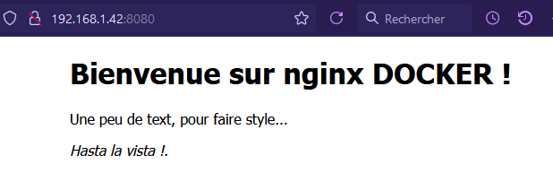
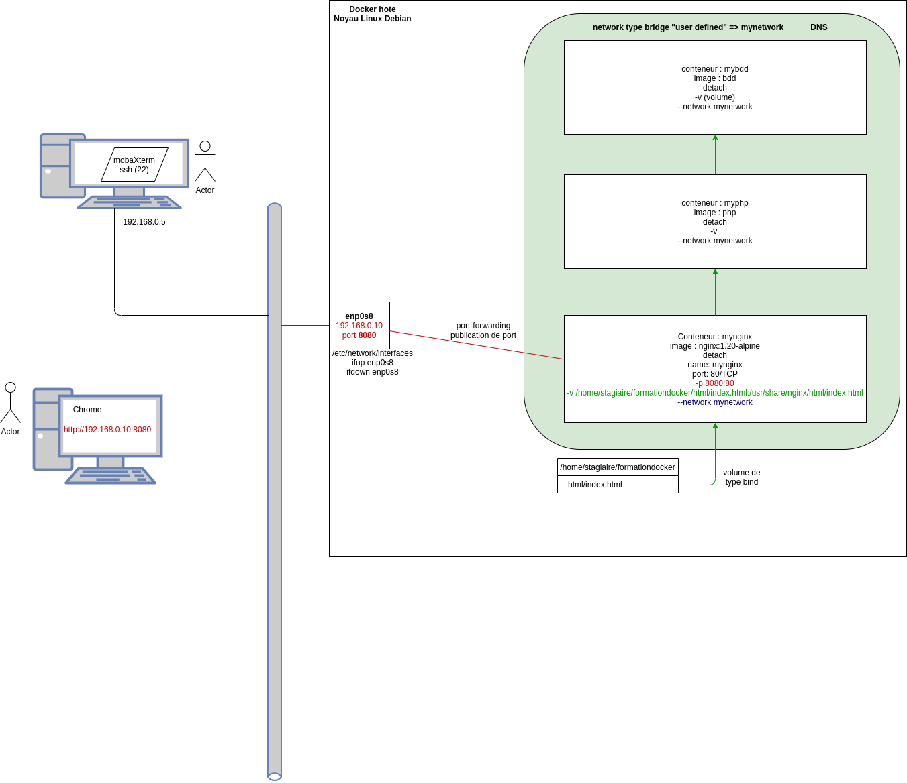
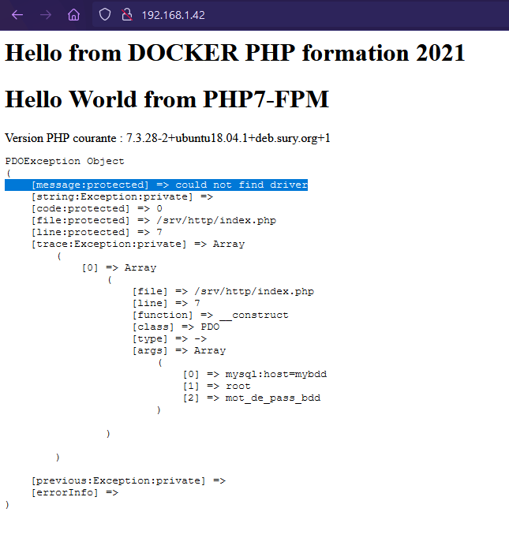
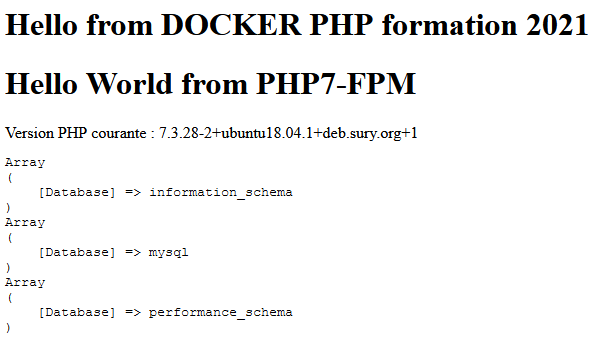
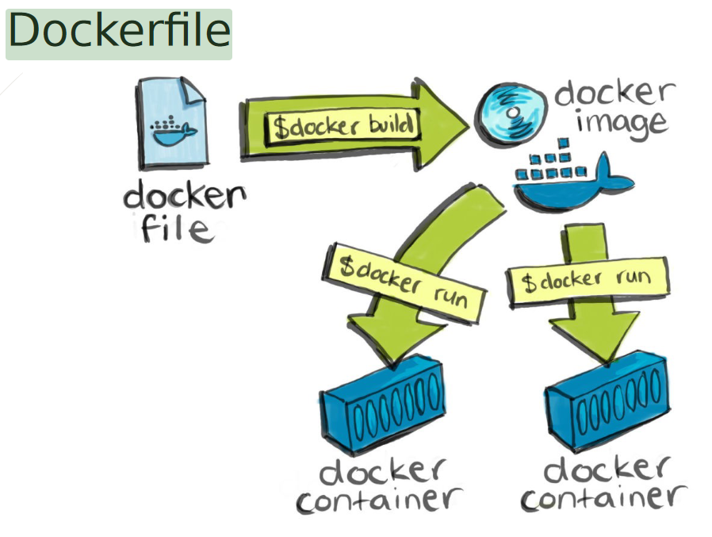
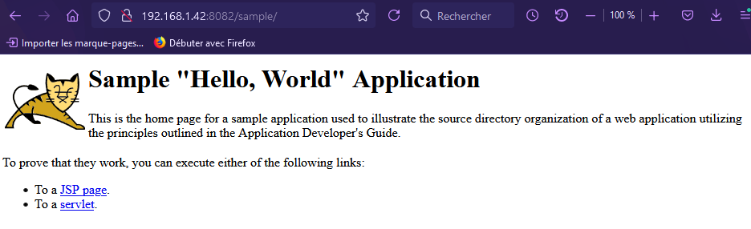

2021-06-21
Pierre Sablé, Formateur & Administrateur Systèmes Linux - DevOps. 21H du 21/06/21 au 23/06/21
Tel : 07.63.88.76.21 (psable@dawan.fr)
Documentation Source en PDF:
https://gitlab.com/pierre.sable/poec_devops_docker
Passage en root:
Mise à jour du serveur et installation de curl:
Lancement du convinience script d’installation de Docker:
On vérifie l’installation avec:
On ajoute l’utilisateur au groupe:
stagiaire@debian:~$ docker image --help
Usage: docker image COMMAND
Manage images
Commands:
build Build an image from a Dockerfile
history Show the history of an image
import Import the contents from a tarball to create a filesystem image
inspect Display detailed information on one or more images
load Load an image from a tar archive or STDIN
ls List images
prune Remove unused images
pull Pull an image or a repository from a registry
push Push an image or a repository to a registry
rm Remove one or more images
save Save one or more images to a tar archive (streamed to STDOUT by default)
tag Create a tag TARGET_IMAGE that refers to SOURCE_IMAGEstagiaire@debian:~$ docker container --help
Usage: docker container COMMAND
Manage containers
Commands:
attach Attach local standard input, output, and error streams to a running container
commit Create a new image from a container s changes
cp Copy files/folders between a container and the local filesystem
create Create a new container
diff Inspect changes to files or directories on a container s filesystem
exec Run a command in a running container
export Export a container's filesystem as a tar archive
inspect Display detailed information on one or more containers
kill Kill one or more running containers
logs Fetch the logs of a container
ls List containers
pause Pause all processes within one or more containers
port List port mappings or a specific mapping for the container
prune Remove all stopped containers
rename Rename a container
restart Restart one or more containers
rm Remove one or more containers
run Run a command in a new container
start Start one or more stopped containers
stats Display a live stream of container(s) resource usage statistics
stop Stop one or more running containers
top Display the running processes of a container
unpause Unpause all processes within one or more containers
update Update configuration of one or more containers
wait Block until one or more containers stop, then print their exit codes
Run 'docker container COMMAND --help' for more information on a command.stagiaire@debian:~$ docker network --help
Usage: docker network COMMAND
Manage networks
Commands:
connect Connect a container to a network
create Create a network
disconnect Disconnect a container from a network
inspect Display detailed information on one or more networks
ls List networks
prune Remove all unused networks
rm Remove one or more networks
Run 'docker network COMMAND --help' for more information on a command.stagiaire@debian:~$ docker volume --help
Usage: docker volume COMMAND
Manage volumes
Commands:
create Create a volume
inspect Display detailed information on one or more volumes
ls List volumes
prune Remove all unused local volumes
rm Remove one or more volumes
Run 'docker volume COMMAND --help' for more information on a command.On peut faire une recherche avec la commande search:
Plus simple, se rendre sur Docker Hub: https://hub.docker.com/search?q=&type=image&operating_system=linux&image_filter=official
docker pull ubuntu # Téléchargement de l'image officielle d'Ubuntu
OU:
docker image pull # Même chose mais plus longue et on est des fainéants ^^On vérifie avec:
On lance une instance de container avec:
docker image run ubuntu:latest
# Pour vérifier:
docker container ls -a
CONTAINER ID IMAGE COMMAND CREATED STATUS PORTS NAMES
a6d535e838cc ubuntu:latest "bash" 42 seconds ago Exited (0) 41 seconds ago flamboyant_mayerdocker container ls n’affiche que les containers actifs.
bash docker container run ubuntu:latest /bin/echo "Hello formation docker"
docker container run -it ubuntu:latest /bin/bash
root@1ba3cc134814:/#
root@1ba3cc134814:/# apt update
root@1ba3cc134814:/# apt install iproute2Un conteneur intancié ouvre le contenu d’une image mais ne modifie pas directement une image par la suite. Il écrit dans une layer R/W.
Si un conteneur est supprimé, sa layer R/W aussi
Un conteneur s’éteind lorsqu’il n’y a plus aucun processus actif à l’intérieur
--name: permet d’assigner un nom au container.
-d: Mode détaché, se lance dans le background, ce qui permet de continuer à utiliser le terminal.
-p: Permet d’assigner un port particulier.
Si l’image demandée n’est présente localement, docker la télécharge depuis le docker hub par défaut (pull)
L’image applicative de type webserver nginx a prévu de lancer un processus nginx qui ne s’arrête pas : donc le conteneur reste up tant que le processus n’est pas killé
docker container run -d --name mynginx nginx:1.20-alpine
a51a7b4f164a9ad3988bb5b4004a5ee13cc44452a825688f5ab304bfe1ae4233
docker container lsLe conteneur est instancié, reste up (visiblement un processus reste actif à l’intérieur) ET le mode detach nous a rendu la main (donc pas de kill)
Sur le lien: http://192.168.1.42:8080
Il manque une mise en réseau pour que les utilisateurs externes puissent, au travers de l’interface enp0s8 du docker hôte, être redirigés automatiquement dans le conteneur conteneur applicatif
publication de port : https://docs.docker.com/config/containers/container-networking/
On modifie le fichier /usr/share/nginx/html/index.html:
<!DOCTYPE html>
<html>
<head>
<title>Bienvenue sur mon site DOCKER ^^!</title>
<style>
body {
width: 35em;
margin: 0 auto;
font-family: Tahoma, Verdana, Arial, sans-serif;
}
</style>
</head>
<body>
<h1>Bienvenue sur nginx DOCKER !</h1>
<p> Une peu de text, pour faire style... </p>
<p><em>Hasta la vista !.</em></p>
</body>
</html>Puis sur le site:

=> présentation de fichiers externes (non présent dans l’image) à un conteneur.

Pour faire un bind de volume on utilise l’option -v:
stagiaire@debian:~/formation-docker$ docker container rm -f mynginx2
mynginx2
stagiaire@debian:~/formation-docker$ docker container run -d --name mynginx2 -v /home/stagiaire/formation-docker/html/index.html:/usr/share/nginx/html/index.html -p 8080:80 nginx:1.20-alpine
f8fbbb79149ab1862600d61b6d1d62b3092a20c98da468be320599f54e8847a3Le type volume permet de fournir un stockage en écriture aussi bien que lecture. Permettant de gérer les données générées par les containers.
Réseau de type bridge : par défaut (les conteneurs instanciés appartiennet à ce réseau)
Réseau host : on obtient la même configuration que le docker hote (cas particulier)
stagiaire@debian:~/formation-docker$ docker network create mynetwork
989ccbdb35483bac542dbef0375eafc4fc5c160c8eb5dbed642f3da940bbbcdc
stagiaire@debian:~/formation-docker$ docker network inspect mynetwork
[
{
"Name": "mynetwork",
"Id": "989ccbdb35483bac542dbef0375eafc4fc5c160c8eb5dbed642f3da940bbbcdc",
"Created": "2021-06-22T14:40:37.593317488+02:00",
"Scope": "local",
"Driver": "bridge",
"EnableIPv6": false,
"IPAM": {
"Driver": "default",
"Options": {},
"Config": [
{
"Subnet": "172.18.0.0/16",
"Gateway": "172.18.0.1"
}
]
},
"Internal": false,
"Attachable": false,
"Ingress": false,
"ConfigFrom": {
"Network": ""
},
"ConfigOnly": false,
"Containers": {},
"Options": {},
"Labels": {}
}
]docker container rm -f mynginx
docker container run -d --name mynginx -p 8080:80 -v /home/stagiaire/formation-docker/html/index.html:/usr/share/nginx/html/index.html --network mynetwork nginx:1.20-alpinePour visualiser les informations d’un objet Docker on utilise inspect.
3 Containers: nginx, php et MariaDB
1 Network Bridge
Le réseau mynetwork et le container nginx ont été créés précédemment. Rappel des commandes:
Et pour le container:
docker pull php
docker container run -t -d --name myphp -p 8081:80 -v /home/stagiaire/formation-docker/php:/usr/share/php --network mynetwork php:latestdocker pull php
docker container run -t -d --name mymariadb -p 8081:80 -v /home/stagiaire/formation-docker/mariadb:/usr/share/mariadb --network mynetwork mariadb:latest
Sujet:
1. Instancier un conteneur myphp, voici les paramètres attendus :
- name: myphp
- detach
- network : mynetwork
- volume : -v /chemin/TP_Appli_microservice/php:/srv/http
- image : phpdockerio/php73-fpm
2. Détruire le conteneur mynginx
3. Créer le conteneur mynginx avec les paramètres suivants :
- name: mynginx
- detach
- network : mynetwork
- volume : -v /chemin/TP_Appli_microservice/conf/nginx.conf:/etc/nginx/conf.d/default.conf
- publication port : 8080:80
- image : nginx:1.20-alpine
mkdir -p TP_Appli_microservice/conf && touch TP_Appli_microservice/conf/nginx.conf
mkdir -p TP_Appli_microservice/php && touch TP_Appli_microservice/php/index.php
# Vérification
stagiaire@debian:~$ tree TP_Appli_microservice/
TP_Appli_microservice/
├── conf
│ └── nginx.conf
├── mysql
│ └── database.sql
└── php
└── index.phpContenu de nginx.conf:
# nginx.conf
server {
index index.php index.html;
error_log /var/log/nginx/error.log;
access_log /var/log/nginx/access.log;
location / {
try_files $uri $uri/ /index.php?$query_string;
}
location ~* \.php$ {
fastcgi_index index.php;
fastcgi_pass myphp:9000;
include fastcgi_params;
fastcgi_param SCRIPT_FILENAME /srv/http$fastcgi_script_name;
fastcgi_param SCRIPT_NAME $fastcgi_script_name;
}
}Contenu de index.php:
# php/index.php
<?php
echo "<h1> Hello from DOCKER PHP formation 2021</h1>";
echo "<h1>Hello World from PHP7-FPM</h1>";
echo 'Version PHP courante : ' . phpversion();
?>stagiaire@debian:~/TP_Appli_microservice/php$ docker exec -it mybdd mysql -uroot -pmot_de_pass_bdd
Welcome to the MariaDB monitor. Commands end with ; or \g.
Your MariaDB connection id is 6
Server version: 10.5.10-MariaDB-1:10.5.10+maria~focal mariadb.org binary distribution
Copyright (c) 2000, 2018, Oracle, MariaDB Corporation Ab and others.
Type 'help;' or '\h' for help. Type '\c' to clear the current input statement.
MariaDB [(none)]> On quitte avec quit.
Nouveau volume crée:
docker volume ls
DRIVER VOLUME NAME
local 9c23ae437072a0361927652a47e8f0dfe9a6bbfd7193086b8d3c1a6198989d3e
il manque un package dans l’image phpdockerio, Réaliser l’install du package php7.3-mysql en live dans le conteneur myphp :
TIPS : exec, it apt update apt install php7.3-mysql
# Redémarrage myphp
docker container restart myphp
myphp
stagiaire@debian:~$ docker ps
CONTAINER ID IMAGE COMMAND CREATED STATUS PORTS NAMES
5bee52301b26 mariadb:10.5 "docker-entrypoint.s…" 11 minutes ago Up 11 minutes 3306/tcp mybdd
8301bc85d472 nginx:1.20-alpine "/docker-entrypoint.…" 18 hours ago Up 18 hours 0.0.0.0:80->80/tcp, :::80->80/tcp mynginx2
cbbb3e3804de nginx:1.20-alpine "/docker-entrypoint.…" 18 hours ago Up 18 hours 0.0.0.0:8080->80/tcp, :::8080->80/tcp mynginx
0e16e140daa6 phpdockerio/php73-fpm "/usr/sbin/php-fpm7.…" 18 hours ago Up 4 seconds 9000/tcp myphpRésultat:

Pour que MariaDB puisse écrire dans le stockage on passe sur un volume au lieu d’un bind.
Doc: https://docs.docker.com/engine/reference/commandline/volume_create/
Résultat:
stagiaire@debian:~/TP_Appli_microservice$ docker ps
CONTAINER ID IMAGE COMMAND CREATED STATUS PORTS NAMES
35023a4181be mariadb:10.5 "docker-entrypoint.s…" 15 seconds ago Up 14 seconds 3306/tcp mybdd
8301bc85d472 nginx:1.20-alpine "/docker-entrypoint.…" 18 hours ago Up 18 hours 0.0.0.0:80->80/tcp, :::80->80/tcp mynginx2
cbbb3e3804de nginx:1.20-alpine "/docker-entrypoint.…" 18 hours ago Up 18 hours 0.0.0.0:8080->80/tcp, :::8080->80/tcp mynginx
0e16e140daa6 phpdockerio/php73-fpm "/usr/sbin/php-fpm7.…" 18 hours ago Up 31 minutes 9000/tcp myphp
stagiaire@debian:~/TP_Appli_microservice$ docker inspect mybdd | grep volume
"myvolume:/var/lib/mysql"
"Type": "volume",
"Name": "myvolume",
"Source": "/var/lib/docker/volumes/myvolume/_data",
Les containers sont dans le même réseau mynetwork, donc ils peuvent communiquer:
stagiaire@debian:~/TP_Appli_microservice$ docker exec -ti mynginx /bin/sh
/ # ping mybdd
PING mybdd (172.18.0.5): 56 data bytes
64 bytes from 172.18.0.5: seq=0 ttl=64 time=0.063 ms
64 bytes from 172.18.0.5: seq=1 ttl=64 time=0.056 ms
^C
--- mybdd ping statistics ---
2 packets transmitted, 2 packets received, 0% packet loss
round-trip min/avg/max = 0.056/0.059/0.063 msIl faut prendre en compte ces modifs en cas de destruction du conteneur : PRA
Plusieurs solutions :
Commit :
docker container commit -a "Pierre" -m "Ajout package php7.3-mysql" myphp php7.3-mysql:1.0
docker image lsVoir: Intro Guide to Dockerfile Best Practices
Sur Docs.Docker: Best pratices for writing Dockerfiles

Pour optimiser la construction des containers (temps et énergie), il faut optimiser l’utilisation du cache.
Respecter (sauf si nécessaire) les pratiques suivantes.


Exercice 1 : Sample tomcat war
Le but de ce TP est de construire un Dockerfile qui permettra de generer une image docker tomcat avec une application war intégrée
Installer le package java (via yum): yum install -y java-11-openjdk
Créer un répertoire /opt/tomcat: mkdir
Récupérer un fichier distant : https://downloads.apache.org/tomcat/tomcat-8/v8.5.61/bin/apache-tomcat-8.5.61.tar.gz
curl -O https://downloads.apache.org/tomcat/tomcat-8/v8.5.61/bin/apache-tomcat-8.5.61.tar.gz
curl -O -L
| > Idéalement : Essayer de minimiser le nombre de Layers !! |
Pendant la construction du Dockerfile, on peut faire tester et vérifier que les commandes utilisées fonctionnent correctement en créant un container de test.
Pour cela on utilise la commande suivante:
docker container run --name TestingBuild_CentOS8 -it --rm centos:8 /bin/bash
# Instruction FROM: image parente de base
# Permet d'avoir un ensemble de commandes à dispo pour ajouter du contenu
FROM centos:8
# Metadata, pour donner des infos sur l'uteur, la version, etc.
LABEL maintainer="David.D"
LABEL description="Image TOMCAT avec application intégrée"
# Intruction pour lancer une commande: RUN
RUN yum install -y java-11-openjdk
RUN mkdir /opt/tomcat \
&& curl -O https://downloads.apache.org/tomcat/tomcat-8/v8.5.68/bin/apache-tomcat-8.5.68.tar.gz \
&& tar -zxf apache-tomcat-8.5.68.tar.gz \
&& mv apache-tomcat-8.5.68/* /opt/tomcat/
# Instruction WORKDIR, positionne le shell dans le répertoire désiré (équivalent d'un "cd")
WORKDIR /opt/tomcat/webapps
RUN curl -O -L https://tomcat.apache.org/tomcat-8.0-doc/appdev/sample/sample.war
# Exposer le port par défaut tomcat 8080
EXPOSE 8080
# Instruction CMD : commande finale qui executer quand un conteneur sera instancié à partir de cette image
CMD ["/opt/tomcat/bin/catalina.sh", "run"]Si on est dans le répertoire:
Sinon:
Vérifiaction:
stagiaire@debian:~/TP_Dockerfile_TOMCAT$ docker image ls
REPOSITORY TAG IMAGE ID CREATED SIZE
tomcat 8.5.68 a86f14cd4c6a 5 minutes ago 553MBstagiaire@debian:~/TP_Dockerfile_TOMCAT$ docker image history tomcat:8.5.68
IMAGE CREATED CREATED BY SIZE COMMENT
a86f14cd4c6a 6 minutes ago /bin/sh -c #(nop) CMD ["/opt/tomcat/bin/cat… 0B
0d31df62d259 6 minutes ago /bin/sh -c #(nop) EXPOSE 8080 0B
83d01bcdb9bf 6 minutes ago /bin/sh -c curl -O -L https://tomcat.apache.… 4.61kB
86d48a23f357 6 minutes ago /bin/sh -c #(nop) WORKDIR /opt/tomcat/webapps 0B
792f38315a18 6 minutes ago /bin/sh -c mkdir /opt/tomcat && curl -O … 25.3MB
4feabfba402c 7 minutes ago /bin/sh -c yum install -y java-11-openjdk 318MB
ddceba74ddf8 10 minutes ago /bin/sh -c #(nop) LABEL description=Image T… 0B
f31e4bddaac1 10 minutes ago /bin/sh -c #(nop) LABEL maintainer=David.D 0B
300e315adb2f 6 months ago /bin/sh -c #(nop) CMD ["/bin/bash"] 0B
<missing> 6 months ago /bin/sh -c #(nop) LABEL org.label-schema.sc… 0B
<missing> 6 months ago /bin/sh -c #(nop) ADD file:bd7a2aed6ede423b7… 209MB docker container run -d --name mytomcat -p 8082:8080 tomcat:8.5.68
stagiaire@debian:~/TP_Dockerfile_TOMCAT$ docker ps
CONTAINER ID IMAGE COMMAND CREATED STATUS PORTS NAMES
a450d3be32d4 tomcat:8.5.68 "/opt/tomcat/bin/cat…" 14 seconds ago Up 13 seconds 0.0.0.0:8082->8080/tcp, :::8082->8080/tcp mytomcatSur : http://{ip_docker_hote}:8080/sample

Dans le cas où l’on doit télécharger des fichiers, si le lien ne change pas, la construction utilisera le cache même si le contenu à télécharger à été modifié !
Pour forcer la construction de l’image sans cache, on utilisera l’option --no-cache.
Voir: https://docs.docker.com/compose/install/
Installation du paquet:
Attribution des droits:
Création des fichiers:
stagiaire@debian:~$ tree Docker-compose/
Docker-compose/
├── conf
│ └── nginx.conf
├── docker-compose.yml
└── php
└── index.php
2 directories, 3 filesversion: "2.4"
services:
mybdd:
image: mariadb:10.5
networks:
- mynetwork
environment:
MARIADB_ROOT_PASSWORD: mot_de_pass_bdd
# Même chose avec une autre écruture:
#- MARIADB_ROOT_PASSWORD=mot_de_pass_bdd
volumes:
- myvolume:/var/lib/mysql
networks:
mynetwork:
volumes:
myvolume: Pour lancer le container depuis docker-compose.yml, on fait un: docker-compose up -d
version: "2.4"
services:
mybdd:
image: mariadb:10.5
networks:
- mynetwork
environment:
MARIADB_ROOT_PASSWORD: mot_de_pass_bdd
# Même chose avec une autre écruture:
#- MARIADB_ROOT_PASSWORD=mot_de_pass_bdd
volumes:
- myvolume:/var/lib/mysql
myphp:
image: phpdockerio/php73-fpm
networks:
- mynetwork
volumes:
- ./php:/srv/http
mynginx:
depends_on:
- myphp
- mybdd
image: nginx:1.20-alpine
networks:
- mynetwork
ports:
- "8080:80"
volumes:
- ./conf/nginx.conf:/etc/nginx/conf.d/default.conf
networks:
mynetwork:
volumes:
myvolume: Vérification:
root@debian:/home/stagiaire/Docker-compose# docker ps
CONTAINER ID IMAGE COMMAND CREATED STATUS PORTS NAMES
defb2e410997 nginx:1.20-alpine "/docker-entrypoint.…" About a minute ago Up 3 seconds 0.0.0.0:8080->80/tcp, :::8080->80/tcp docker-compose_mynginx_1
6d82d5f004a2 phpdockerio/php73-fpm "/usr/sbin/php-fpm7.…" About a minute ago Up 4 seconds 9000/tcp docker-compose_myphp_1
0eca0e9f5394 mariadb:10.5 "docker-entrypoint.s…" 18 minutes ago Up 4 seconds 3306/tcp docker-compose_mybdd_1stagiaire@debian:~/Docker-compose$ docker-compose ps
Name Command State Ports
--------------------------------------------------------------------------------------------------
docker-compose_mybdd_1 docker-entrypoint.sh mysqld Up 3306/tcp
docker-compose_mynginx_1 /docker-entrypoint.sh ngin ... Up 0.0.0.0:8080->80/tcp,:::8080->
80/tcp
docker-compose_myphp_1 /usr/sbin/php-fpm7.3 -O Up 9000/tcp